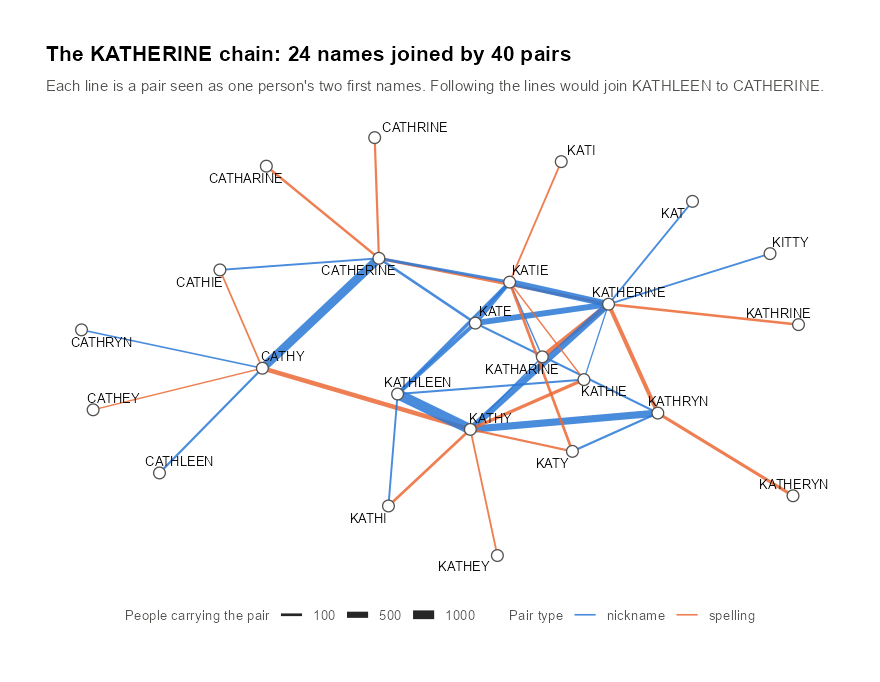
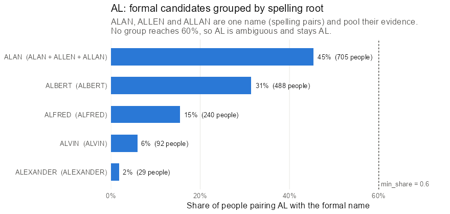
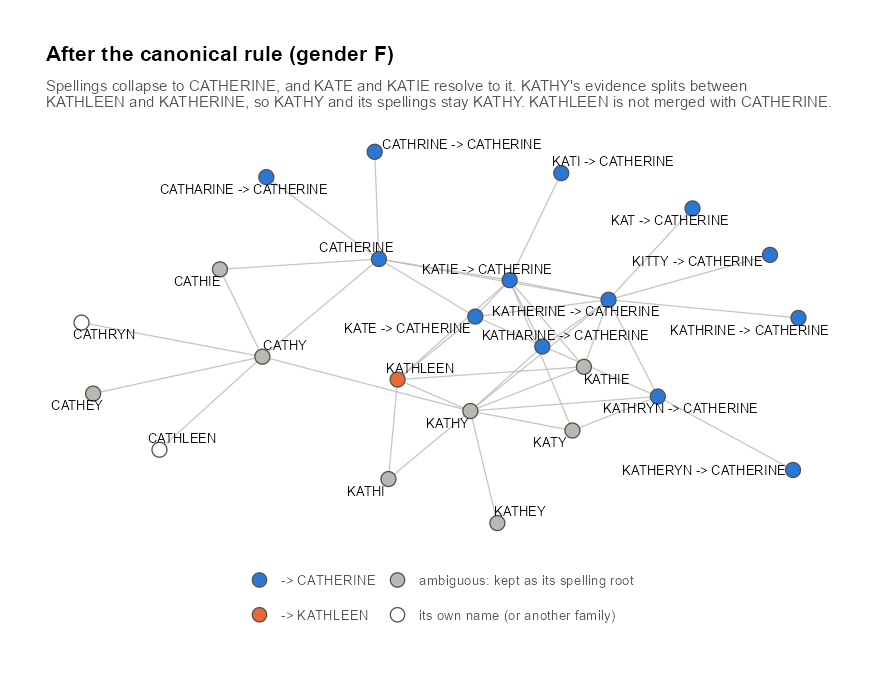
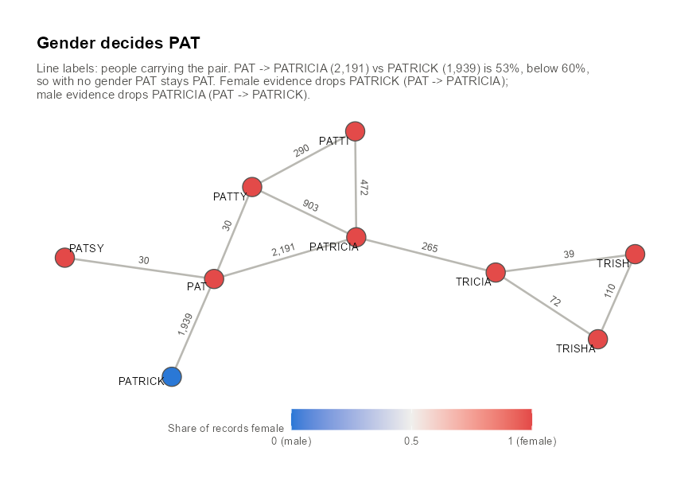

Canonical first names, nicknames and gender
Source:vignettes/canonical-first-names.Rmd
canonical-first-names.RmdThe same person often appears under different forms of their first name: ROBERT one year, BOB the next, then ROBERT again. peopleparser can attach to each parsed name its formal names, its nicknames, and one canonical first name, a single form shared by the variants of a name. This article explains where the variants come from, how the canonical name is chosen when a name has several possible formal names, and how gender is used to decide between them.
The variant table
first_name_pairs holds pairs of first names that are two
forms of one given name. The pairs come from the
synthid package. synthid follows each person on a Form
990 Part VII list across their own organization’s filings, 2010-2024
(15.0 million people), and records the first-name forms each person
used. A person listed as ROBERT, BOB and ROB gives three pairs. The
synthid vignette First-name variants - how the table was built
describes the build and the hand review.
# pairs by type, split by whether they were reviewed by hand (the lexicon)
table( first_name_pairs$type, first_name_pairs$lexicon ) |>
knitr::kable( col.names = c("not reviewed", "lexicon") )| not reviewed | lexicon | |
|---|---|---|
| cognate | 0 | 29 |
| compound | 0 | 20 |
| misspelling | 10217 | 0 |
| nickname | 0 | 397 |
| sound_alike | 13748 | 0 |
| spelling | 0 | 556 |
- The lexicon (
lexicon = TRUE) is 1,002 pairs seen in 25 or more people, reviewed by hand: nicknames (BOB/ROBERT), spellings (STEVEN/STEPHEN), cognates (JOSE/JOSEPH) and compound names (MARY/MARYANN). - The other rows were not reviewed. Misspellings pair a rare form with a common one (KATHRINE/CATHERINE). Sound-alikes pair two established names that sound the same (KRISTY/KRISTIE).
Each row records how many people carry the pair
(n_emp_ids), how common each form is nationally
(freq_short, freq_long) and the share of each
form’s records that are female (f_short,
f_long).
# the hand-reviewed pairs for PAT and KATE
keep <- first_name_pairs$name_short %in% c("PAT", "KATE") & first_name_pairs$lexicon
vars <- c( "name_short", "name_long", "type", "n_emp_ids", "f_short", "f_long", "formal" )
subset( first_name_pairs, keep, vars ) |> knitr::kable()| name_short | name_long | type | n_emp_ids | f_short | f_long | formal |
|---|---|---|---|---|---|---|
| KATE | KATHERINE | nickname | 456 | 0.997 | 0.999 | long |
| KATE | KATIE | nickname | 246 | 0.997 | 0.999 | short |
| KATE | KATHLEEN | nickname | 203 | 0.997 | 1.000 | long |
| KATE | CATHERINE | nickname | 92 | 0.997 | 0.999 | long |
| KATE | KATHRYN | nickname | 63 | 0.997 | 0.999 | long |
| PAT | PATRICIA | nickname | 2191 | 0.998 | 1.000 | long |
| PAT | PATRICK | nickname | 1939 | 0.998 | 0.000 | long |
| PAT | PATSY | nickname | 30 | 0.998 | 1.000 | long |
| PAT | PATTY | nickname | 30 | 0.998 | 0.998 | short |
| PAT | PATT | spelling | 26 | 0.998 | 0.000 | NA |
Pairs are stored with the shorter form first. That is not always the
formal name (JOHN/JOHNNY, DEBRA/DEBBIE), so the formal
column says which side of a nickname pair is the formal name. It comes
from three rules, in order:
- a pet ending added to the other form (JOHNNY, BILLY, KATIE from KATE);
- a pet ending (-Y, -IE, -EY, -I) on a form no longer than the other (KATHY/KATHLEEN, CHARLIE/CHARLES);
- otherwise, the longer form.
Three pairs were corrected by hand after review.
Chains: why a name cannot simply follow its links
Each pair links two names, so the pairs form chains. In the KATHERINE chain, 24 names are joined by 40 pairs:

Following the links would make every name in the chain one name. KATE is a nickname of both KATHLEEN and CATHERINE, so KATHLEEN and CATHERINE would be merged, although they are different names. The canonical rule therefore uses only direct links: a spelling step, then at most one nickname step.
The canonical rule
Step 1: spelling root
Spelling pairs (reviewed spellings, plus misspellings whose rare form has fewer than 1,000 national records) form a graph. Each name moves to its most common spelling partner, repeatedly, as long as that partner is more common. Each step goes to a more common name, so the path always ends. Its end is the spelling root:
x <- c( "KATHRYN", "KATHERINE", "STEVEN", "JEFFERY", "KATHRINE" )
vars <- c( "first_name_canonical", "canonical_rule" )
cbind( name = x, nickname_lookup(x)[ , vars ] ) |> knitr::kable()| name | first_name_canonical | canonical_rule |
|---|---|---|
| KATHRYN | CATHERINE | spelling |
| KATHERINE | CATHERINE | spelling |
| STEVEN | STEPHEN | spelling |
| JEFFERY | JEFFREY | spelling |
| KATHRINE | CATHERINE | spelling |
KATHRYN moves to KATHERINE (more common), and KATHERINE to CATHERINE (more common still). The 1,000-record cap keeps distinct names out: MARCO is listed as a misspelling of MARK (8,069 records against 591,323), but it is a name in its own right, so it is not merged.
Step 2: the nickname step
A name is resolved to a formal name when its spelling family is mainly used as a nickname. Two tests decide this:
- more people carry the family as the nickname side of a pair than as the formal side; and
- the number of people carrying it as a nickname is at least
min_nick_rate(0.2%) of the name’s national records.
The second test keeps standalone names standalone. Fifty people carry MARK/MARCUS, out of 591,323 MARK records (0.008%), so MARK stays MARK. JIM passes easily: 13,435 people carry JIM/JAMES, 3.7% of the JIM records.
canonical_first_name( c("JIM", "MARK", "CHAD", "LISA") )
#> [1] "JAMES" "MARK" "CHAD" "LISA"The formal candidates are the name’s direct formal
partners. Partners that are themselves mostly nicknames are dropped when
any other partner exists (KATIE is not resolved to KATE). The candidates
are grouped by spelling root, and each group is weighted by the people
carrying its pairs. The top group wins if it holds at least
min_share (60%) of the weight:

ALAN, ALLEN and ALLAN are one name, so they pool their evidence. Even so, 45% is not enough, so AL is ambiguous and keeps its own spelling root. KATHY is ambiguous for the same reason, split between KATHLEEN and the KATHERINE spellings. Applied to the KATHERINE chain:

x <- c( "KATE", "KATIE", "KITTY", "KATHY", "CATHY", "KATHLEEN", "CATHLEEN" )
vars <- c( "first_name_type", "first_name_canonical", "canonical_rule" )
# all female with high confidence, so gender rules out the male formal names
nk <- nickname_lookup( x, gender = "F", gender_confidence = 99 )
cbind( name = x, nk[ , vars ] ) |> knitr::kable()| name | first_name_type | first_name_canonical | canonical_rule |
|---|---|---|---|
| KATE | both | CATHERINE | nickname |
| KATIE | nickname | CATHERINE | nickname |
| KITTY | nickname | CATHERINE | nickname |
| KATHY | nickname | KATHY | ambiguous |
| CATHY | nickname | KATHY | ambiguous |
| KATHLEEN | formal | KATHLEEN | self |
| CATHLEEN | formal | CATHLEEN | self |
canonical_rule records how each canonical name was
reached:
| rule | meaning |
|---|---|
self |
the name is its own canonical form |
spelling |
moved to its spelling root |
nickname |
resolved through the nickname step |
ambiguous |
a nickname whose formal name could not be chosen; kept as its spelling root |
Gender
Gender is used only to choose among formal names. It does not change spellings or the names in a family. The gender evidence for a record is:
- a gendered salutation:
MRis male;MRS,MSandMISSare female; - otherwise, the parsed
gender, ifgender_confidenceis at leastmin_confidence(80); - otherwise, unknown.
With known gender, formal candidates of the other gender are dropped.
A candidate’s gender is the majority of its national records
(f_long or f_short). Then the share test is
applied to the candidates that remain:

# the same nickname for a woman, a man and a person of unknown gender
nk <-
nickname_lookup(
first_name = c("PAT", "PAT", "PAT"),
gender = c("F", "M", "U"),
gender_confidence = c(95, 95, 50)
)
vars <- c( "first_name_formal", "first_name_canonical", "canonical_rule" )
cbind( gender = c("F", "M", "U"), nk[ , vars ] ) |> knitr::kable()| gender | first_name_formal | first_name_canonical | canonical_rule |
|---|---|---|---|
| F | PATRICIA;; PATSY | PATRICIA | nickname |
| M | PATRICK | PATRICK | nickname |
| U | PATRICIA;; PATRICK;; PATSY | PAT | ambiguous |
If gender rules out every candidate, the name keeps
its own form (self). The table has no female formal name
for CHRIS, so a female CHRIS stays CHRIS and is not sent to
CHRISTOPHER:
nk <- nickname_lookup( "CHRIS", gender = "F", gender_confidence = 95 )
nk[ , vars ] |> knitr::kable()| first_name_formal | first_name_canonical | canonical_rule |
|---|---|---|
| CHRISTOPHER;; CHRISTIAN | CHRIS | self |
A caution about gender. The gender
field in a parse is itself inferred from the first name (census name
frequencies), and so is the female share recorded in the variant table.
99.8% of PAT records in the table are female. A parse of PAT says female
with only 60% confidence. That is below the threshold of 80, so PAT
alone stays ambiguous. PAT resolves to a formal name only when a
salutation gives the gender. The gender column of the parse
does not use the salutation (MR PAT still reads F there); the nickname
step does:
x <- c( "PAT SMITH", "MR PAT SMITH", "MRS PAT SMITH" )
vars <- c( "name", "gender", "gender_confidence", "first_name_canonical", "canonical_rule" )
parse_names( x, add_nicknames = TRUE )[ , vars ] |> knitr::kable()| name | gender | gender_confidence | first_name_canonical | canonical_rule |
|---|---|---|---|---|
| PAT SMITH | F | 59.5 | PAT | ambiguous |
| MR PAT SMITH | F | 59.5 | PATRICK | nickname |
| MRS PAT SMITH | F | 59.5 | PATRICIA | nickname |
A name’s whole family: first_name_variants()
first_name_variants() lists everything that shares a
name’s canonical form, and how each name gets there. via is
the name it connects through. Rows with
in_canonical = FALSE are related but not
merged:
- unreviewed sound-alikes;
- cognates (JOSE for JOSEPH) and compounds (MARYANN);
- nicknames that are ambiguous between this name and another.
first_name_variants( "kate", min_freq = 1000 ) |> knitr::kable()| name | canonical | relation | via | in_canonical | freq | share_female |
|---|---|---|---|---|---|---|
| CATHERINE | CATHERINE | canonical | TRUE | 80652 | 0.999 | |
| KATHERINE | CATHERINE | spelling | CATHERINE | TRUE | 68778 | 0.999 |
| KATHRYN | CATHERINE | spelling | KATHERINE | TRUE | 56874 | 0.999 |
| KATHARINE | CATHERINE | spelling | KATHERINE | TRUE | 6640 | 0.990 |
| KATI | CATHERINE | spelling | KATIE | TRUE | 1936 | 0.998 |
| CATHARINE | CATHERINE | spelling | CATHERINE | TRUE | 1624 | 0.978 |
| KATHERYN | CATHERINE | spelling | KATHRYN | TRUE | 1529 | 0.991 |
| KATIE | CATHERINE | nickname | KATHERINE | TRUE | 83422 | 0.999 |
| KATE | CATHERINE | nickname | KATHERINE | TRUE | 60703 | 0.997 |
| KITTY | CATHERINE | nickname | KATHERINE | TRUE | 4930 | 0.997 |
| KAT | CATHERINE | nickname | KATHERINE | TRUE | 2510 | 0.750 |
| KATRINA | CATHERINE | sound_alike | KATHERINE | FALSE | 13742 | 0.999 |
| KATHI | CATHERINE | sound_alike | KATE | FALSE | 6391 | 0.990 |
| CATHRYN | CATHERINE | sound_alike | CATHRIN | FALSE | 2059 | 1.000 |
| CATRINA | CATHERINE | sound_alike | CATERINA | FALSE | 1067 | 1.000 |
| KATHY | CATHERINE | ambiguous nickname | KATHY | FALSE | 170348 | 1.000 |
| CATHY | CATHERINE | ambiguous nickname | KATHY | FALSE | 77965 | 0.999 |
| KATY | CATHERINE | ambiguous nickname | KATHY | FALSE | 11867 | 0.993 |
| KATHIE | CATHERINE | ambiguous nickname | KATHY | FALSE | 7323 | 0.997 |
| CATHIE | CATHERINE | ambiguous nickname | KATHY | FALSE | 3165 | 0.996 |
KATE resolves to CATHERINE. The family holds CATHERINE’s spellings, the misspellings that lead to them, and its nicknames. KATHY and CATHY appear as ambiguous nicknames: they could belong to this family, but they are not merged into it.
Without the related rows and the rare forms:
first_name_variants( "steve", related = FALSE, min_freq = 100 ) |> knitr::kable()| name | canonical | relation | via | in_canonical | freq | share_female |
|---|---|---|---|---|---|---|
| STEPHEN | STEPHEN | canonical | TRUE | 218193 | 0.000 | |
| STEVEN | STEPHEN | spelling | STEPHEN | TRUE | 204799 | 0.000 |
| STEPHAN | STEPHEN | spelling | STEPHEN | TRUE | 6925 | 0.000 |
| STEPHANE | STEPHEN | misspelling | STEPHEN | TRUE | 806 | 0.998 |
| STEVAN | STEPHEN | misspelling | STEVEN | TRUE | 714 | 0.000 |
| STEPHON | STEPHEN | misspelling | STEPHEN | TRUE | 237 | 0.000 |
| STEVI | STEPHEN | misspelling | STEVE | TRUE | 184 | 0.000 |
| STEVE | STEPHEN | nickname | STEVEN | TRUE | 419562 | 0.000 |
Gender can change the family. For a female PAT the family is PATRICIA. With no gender PAT is ambiguous, so its family is just PAT:
# a female PAT
first_name_variants( "pat", gender = "F", min_freq = 1000 ) |> knitr::kable()| name | canonical | relation | via | in_canonical | freq | share_female |
|---|---|---|---|---|---|---|
| PATRICIA | PATRICIA | canonical | TRUE | 175659 | 1.000 | |
| PATTI | PATRICIA | spelling | PATTY | TRUE | 29761 | 0.998 |
| TRISHA | PATRICIA | spelling | TRICIA | TRUE | 8246 | 0.997 |
| PATTIE | PATRICIA | spelling | PATTY | TRUE | 2411 | 0.983 |
| PAT | PATRICIA | nickname | PATRICIA | TRUE | 110517 | 0.998 |
| PATTY | PATRICIA | nickname | PATRICIA | TRUE | 35193 | 0.998 |
| TRICIA | PATRICIA | nickname | PATRICIA | TRUE | 17703 | 0.996 |
| PATRICE | PATRICIA | cognate | PATRICIA | FALSE | 8788 | 0.998 |
# PAT with no gender
first_name_variants( "pat", min_freq = 1000 ) |> knitr::kable()| name | canonical | relation | via | in_canonical | freq | share_female |
|---|---|---|---|---|---|---|
| PAT | PAT | canonical | TRUE | 110517 | 0.998 | |
| PATTI | PAT | sound_alike | PAT | FALSE | 29761 | 0.998 |
| PATTIE | PAT | sound_alike | PAT | FALSE | 2411 | 0.983 |
Using it when parsing
parse_name() and parse_names() take
add_nicknames = TRUE, which adds the columns
first_name_type, first_name_formal,
first_name_nicknames, first_name_canonical and
canonical_rule:
x <- c( "Bob Jones", "MRS PAT LEE", "Kathy Ruiz", "STEVEN H PARK", "Mark Webb" )
vars <- c( "name", "first_name", "gender",
"first_name_formal", "first_name_canonical", "canonical_rule" )
parse_names( x, add_nicknames = TRUE )[ , vars ] |> knitr::kable()| name | first_name | gender | first_name_formal | first_name_canonical | canonical_rule |
|---|---|---|---|---|---|
| Bob Jones | BOB | M | ROBERT | ROBERT | nickname |
| MRS PAT LEE | PAT | F | PATRICIA;; PATSY | PATRICIA | nickname |
| Kathy Ruiz | KATHY | F | KATHLEEN;; KATHRYN;; KATHERINE;; KATHARINE | KATHY | ambiguous |
| STEVEN H PARK | STEVEN | M | STEPHEN | spelling | |
| Mark Webb | MARK | M | MARK | self |
The helpers canonical_first_name(),
get_formal_names() and get_nicknames() return
single columns of the same lookup.
How well it works
A pilot on 33,535 Part VII records (1,000 organizations, 2010-2012)
that synthid had linked into persons compared the canonical name with
synthid’s earlier 70-name nickname table
(data-raw/pilot-nicknames/):
| Same person, first names differ (204 pairs) | Different people, same return and year (per 1,000 pairs) | |
|---|---|---|
| 70-name table, direct pairs | 56% matched | 2.2 |
| same canonical name | 83% matched | 2.9 |
| same canonical name, or a lexicon pair | 89% matched | 3.4 |
- For 93% of the people seen under both a nickname and its formal name, the two names get the same canonical name.
- About a quarter of records change name. 1.2% are ambiguous.
- Most same-person pairs still missed are typos (MARAGARET, STEPHEM), which a string-distance comparison handles.
- Most different-person “matches” are two people with one name on the same board (JIM and JAMES), which only the surname and other fields can separate.
The same-person figures are optimistic. The variant table was built from the same kind of person links, so this test is partly circular. The different-person test does not have that problem.
Settings
| argument | default | effect |
|---|---|---|
min_share |
0.6 | share of the evidence the top formal name needs; lower resolves more ambiguous nicknames |
min_nick_rate |
0.002 | how much nickname use a name needs before it is resolved; 0 lets MARK resolve to MARCUS |
spelling |
c("lexicon", "misspelling") |
add "sound_alike" to merge unreviewed sound-alikes
too |
min_confidence |
80 | census gender confidence needed to use gender
|